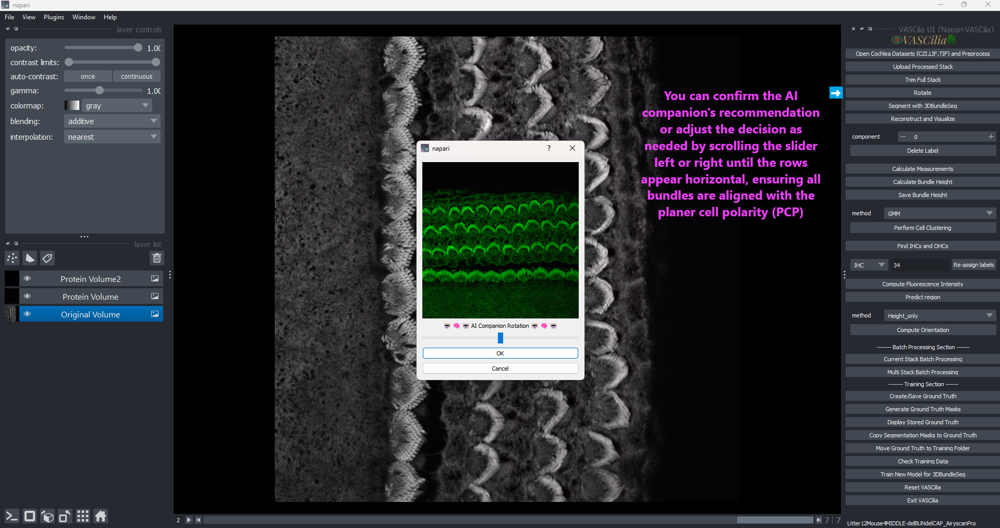

Rotate Cochlea Stacks#
The Rotate Cochlea Stacks feature in VASCilia enables users to correct the orientation of cochlear stacks. This ensures that subsequent analyses, such as alignment and measurements, are performed on properly oriented data. The feature includes an AI-assisted companion to provide rotation suggestions and an interactive user interface for manual adjustments.
### Why Rotation is Important
The cochlea is naturally arranged in a spiral shape, which results in stacks being captured at varying orientations during imaging. Proper alignment is crucial to ensure that all slides are consistent and aligned with the Planar Cell Polarity (PCP), a key structural feature for accurate measurements and downstream analysis.
This rotation process helps researchers analyze cochlear structures in their correct anatomical alignment, making comparisons and measurements more reliable.
Key Features#
AI-Assisted Suggestions with PCPAlignNet:
Utilizes a deep learning model, PCPAlignNet, to predict the required rotation angle for proper alignment.
Interactive Slider for Manual Adjustment:
Displays a user-friendly interface with a rotation slider.
Allows users to fine-tune the rotation angle suggested by the AI (if necessary).
Real-Time Visualization:
Shows a preview of the rotated middle frame, updating dynamically as the slider is adjusted.
File Organization:
Saves the rotated stack in a dedicated folder, full_stack_rotated_images.
Stores the applied rotation angle in a text file for future reference.
Error Handling:
Ensures that already rotated stacks are not processed again unless explicitly reset.
AI Prediction: Automatic Rotation Angle Selection#
The Rotate AI Prediction module in VASCilia assists in determining the optimal rotation angle for aligning cochlear stacks. It leverages the deep learning model PCPAlignNet, trained on cochlear stack data, to predict the rotation angle with high precision.
Key Components#
Deep Learning Model: PCPAlignNet:
Architecture:
Based on the DenseNet-121 model with modifications for grayscale images.
Pre-trained on a large dataset for robust feature extraction.
Supports 72 classes, each representing a rotation angle in 5-degree increments.
Prediction Workflow:
Processes each frame in the stack to predict its rotation angle:
Resizes images to 256x256.
Converts them to tensors.
Normalizes pixel values to a mean of 0.5 and a standard deviation of 0.5.
Computes the average rotation angle across all frames to determine the final angle.
Model Integration:
Pre-trained model: best_model_all_densenet121.pth.
Loaded during execution and used in evaluation mode for inference.
Workflow and Usage#
Image Preprocessing:
Each image in the stack is resized, normalized, and converted to a tensor before being passed to the model.
Batch Prediction:
All stack frames are classified to determine their individual rotation angles.
Final Decision:
The average rotation angle is calculated across all frames.
Converts the angle prediction into the degree of rotation needed for alignment.
Output:
Provides the rotation angle to the Rotate Cochlea Stacks module for implementation.
Practical Considerations#
Model Requirements:
Ensure the pre-trained model is available in the model_rotation_prediction directory.
Model filename: best_model_all_densenet121.pth.
Class Definitions:
72 Classes: Each class represents a rotation angle in 5-degree increments.
Error Handling:
The AI model predicts a valid angle for every frame. If inconsistencies arise, users can manually adjust the angle.
Extending Rotation Functionality#
To customize or extend the rotation functionality, you can modify the existing code in rotate_cochlea_action.py or implement additional features in rotate_AI.py in src/napari_vascilia/core/
Extending the Functionality#
To add or modify functionality, edit the following files:
rotate_cochlea_action.py and
rotate_AI.py
—
